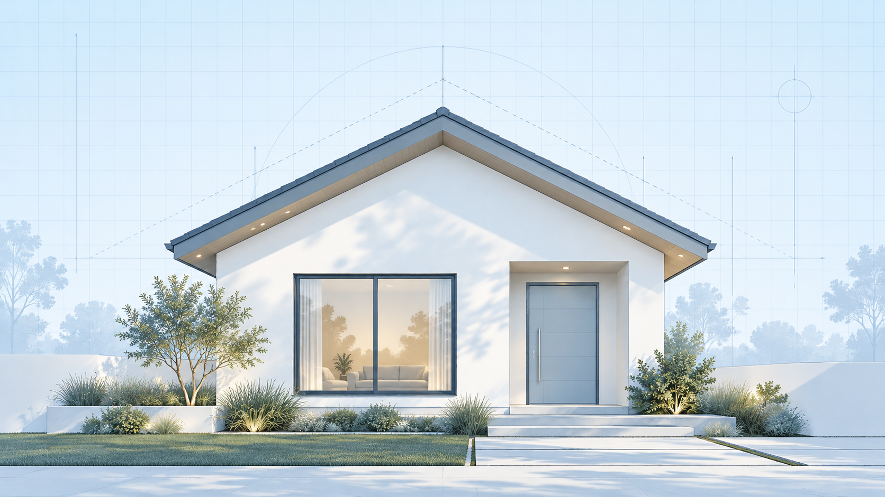

Casa térrea
Um pavimento, com ambientes identificados individualmente.
Uma residência térrea apresentada com clareza, sensibilidade e atenção aos detalhes. Conheça os espaços, descubra os materiais e explore cada escolha técnica.

Dados conforme memorial descritivo de 19/10/2026. O conteúdo apresenta especificações de projeto, não comprova obra executada.
Uma leitura acolhedora de um projeto técnico: cada escolha aparece de forma acessível, sem esconder as informações que importam.
O projeto reúne três quartos, sala, cozinha, banheiro e hall em um único pavimento, oferecendo uma organização residencial objetiva, com especificações de materiais e sistemas documentadas.
Um pavimento, com ambientes identificados individualmente.
Telhas cerâmicas capa-canal e estrutura de madeira especificada.
Paginação de pisos, revestimentos, cores e esquadrias previstas.
213,96 m² indicados no memorial, correspondentes a 71,32% do lote.
O lote informado tem 300 m². A implantação considera os recuos exigidos no memorial: 7,35 m na frente, 7,35 m nos fundos e 2,35 m em cada lateral. O esquema ao lado destaca esses afastamentos de forma ilustrativa.
Esquema ilustrativo para leitura dos recuos do lote, sem escala.Conheça os ambientes previstos e suas metragens. Selecione um cômodo para ver os acabamentos associados ao memorial.
Um panorama visual de superfícies, tonalidades, revestimentos e detalhes especificados. Os exemplos são referências do memorial, não imagens da obra finalizada.
As soluções construtivas do memorial em uma biblioteca organizada, com busca e filtros. Abra os itens para conhecer medidas, materiais e orientações de execução.
Além da escolha dos acabamentos, o memorial registra compromissos de implantação, documentação e entrega da obra.
Compatibilização da arquitetura com os projetos estrutural, elétrico e hidrossanitário, além das licenças aplicáveis.
Fechamento da obra, placa de identificação, instalações provisórias e locação conferida pelo responsável técnico.
Aplicação dos sistemas estruturais, vedações, instalações e acabamentos previstos, com verificação conforme projetos executivos.
Limpeza interna e externa, remoção de resíduos e checagem dos componentes instalados antes do encerramento.